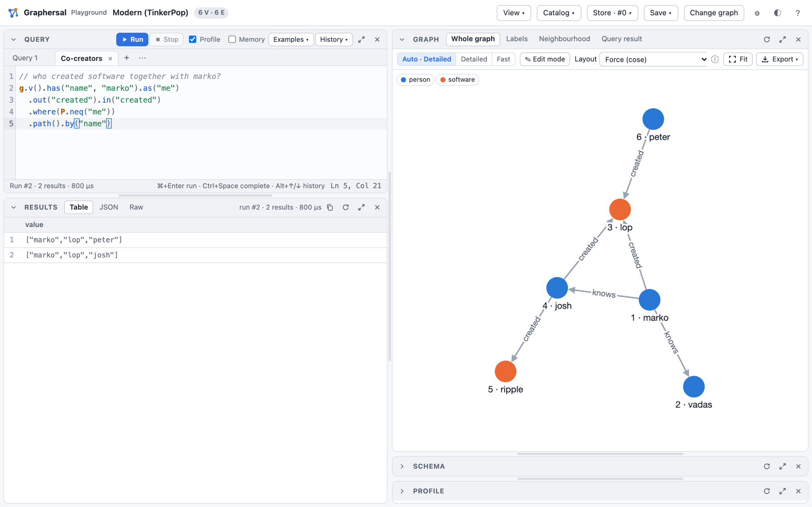

Introduction
Graphersal is an in-memory graph database and traversal engine written in Rust. You ask it questions in plain language or in Gremlin. In the AI chat you simply write what you want to know, and the model of your choice turns it into queries, runs them and answers. Gremlin is the query language of Apache TinkerPop™: start somewhere in a graph, walk along its edges, filter, group and count. Read queries may also be written in GQL, the ISO graph query language (Cypher-like patterns; experimental).
Try it now in the live playground: the real engine in your browser, nothing to install. The source code, releases and issues are on GitHub.
Why Graphersal
AI moves faster than the tools around it. We built Graphersal so you don't have to wait for them: a lightweight, embeddable graph engine you can turn into whatever your AI solution needs — a library inside your application, a tool for your agents, or a full server with your own features on top.
It works out of the box: a browser UI, an MCP endpoint for AI agents, an AI chat where you simply ask about your graph in plain language and it writes and runs the queries for you, durable storage and transactions, and the safety to run queries you did not write — permissions, read-only access, resource limits and timeouts. You start with a working system, not with a list of components to wire together.
A first look
// who created software together with marko?
g.v().has("name", "marko").as("me")
.out("created").in("created")
.where(P.neq("me"))
.path().by("name")

What you get
- Gremlin, two ways. Build traversals in Rust (
g.v(None).has_label("person").out("knows")) or write them as text in the Gremlin DSL, in snake_case or in Gremlin's own camelCase (hasLabel,outE). The text runs the same everywhere: in the browser, in the command line, from Python and through an AI agent. - GQL patterns (experimental).
g.gql(..)runs ISO GQL queries (MATCH (p:person)-[:knows]->(f) RETURN f.name,INSERT,SET,DELETE, Cypher spellings as aliases) on the same engine, and Gremlin steps may follow. Its subset and answers may still change between versions. - A playground in the browser. The real engine, compiled to WebAssembly: write a query, see a table, the graph drawing, the schema and the optimized plan. Nothing to install.
- A command line tool. One-shot queries for shell scripts, an interactive REPL with completion and help, and a local server that brings the playground UI to a graph on your disk.
- AI agents on your graph. The server speaks the Model Context Protocol (MCP), so Claude Code or another MCP client can query the graph you are looking at. In the playground's AI Chat tab you ask about your graph in plain language, and the model of your choice writes and runs the queries (experimental).
- Values with real types. Besides numbers, strings, UUIDs and nested JSON: five date and time types modelled on PostgreSQL (time zones from the IANA database, calendar-correct arithmetic, TinkerPop's date steps), and vectors for embeddings with exact similarity search and quantization (Embeddings and Vector Search is the hands-on tour).
- Safe by construction. Every traversal is atomic: it commits completely or leaves nothing behind. Schemas (a subset of JSON Schema) are enforced on write and fill create-time defaults. Limits, timeouts and permissions make it safe to run queries you did not write.
- Durable when you need it. A graph lives in memory, and the Store keeps it on disk: every commit is in a write-ahead log, you can go back to any point in time, fork, roll back, back up and repair. The file format is a public specification.
- Fast and observable. A rule-based optimizer rewrites each query and answers
has()filters from declared property indexes;profile()shows the optimized plan with timings, traverser counts and memory per step. - Open for integration. Rust and Python APIs, saved (named, parameterized) queries stored in the graph, change capture with commit hooks, GraphSON and GraphML files, and a storage trait to run the whole engine on a storage of your own.
Where to go next
| You want to ... | Read |
|---|---|
| try it right now | the live playground (nothing to install); a guided tour: Try It in the Browser |
| read the source, download a release or report an issue | the GitHub repository |
| install the command-line tool, the Python package or the crate | Installation |
| run queries from a terminal or a script | The Command Line |
| let an AI agent work with your graph | Dev Server, MCP and AI Chat |
| search by meaning with embeddings (semantic search, GraphRAG) | Embeddings and Vector Search |
| understand graphs and Gremlin first | Why a Graph? |
| use it from code | Rust Quick Start, Python Quick Start |
| look up a step or a rule | The Gremlin DSL, Step Reference |
| query with GQL or Cypher-like patterns (experimental) | GQL Queries |
| find a command | Command Cheat Sheet |
Graphersal is not a complete copy of TinkerPop. It follows the TinkerPop specification for every step it implements and checks that with TinkerPop's own test suite, but some steps are not implemented yet and a few behave differently on purpose. Each difference is documented where the feature is described and collected in TinkerPop Deviations; see Graphersal and TinkerPop.